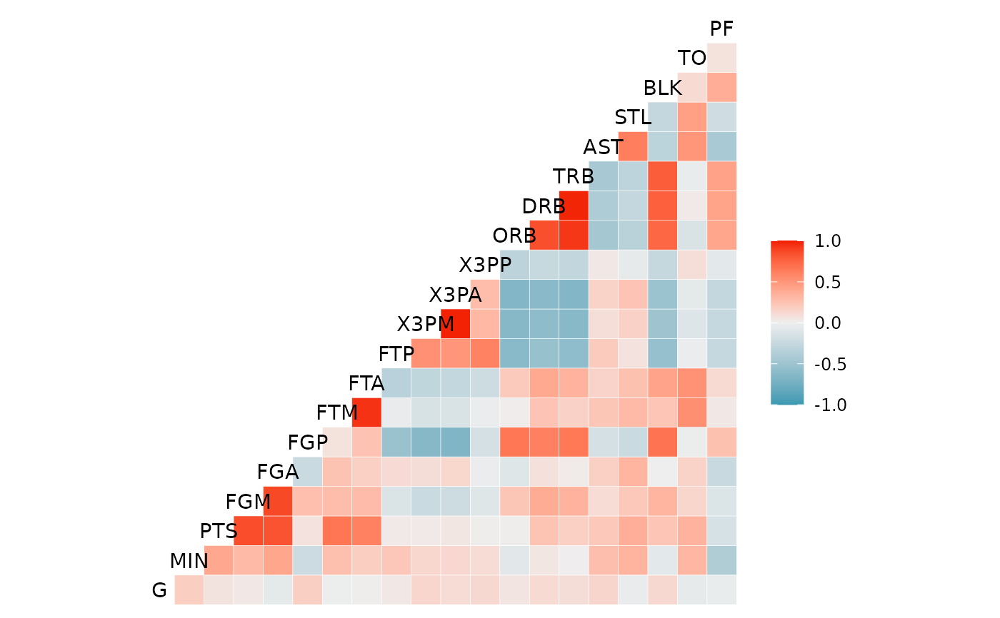

Function for making a correlation matrix plot, using ggplot2.
The function is directly inspired by Tian Zheng and Yu-Sung Su's
corrplot function in the 'arm' package.
Please visit http://github.com/briatte/ggcorr for the latest version
of ggcorr, and see the vignette at
https://briatte.github.io/ggcorr/ for many examples of how to use it.
ggcorr( data, method = c("pairwise", "pearson"), cor_matrix = NULL, nbreaks = NULL, digits = 2, name = "", low = "#3B9AB2", mid = "#EEEEEE", high = "#F21A00", midpoint = 0, palette = NULL, geom = "tile", min_size = 2, max_size = 6, label = FALSE, label_alpha = FALSE, label_color = "black", label_round = 1, label_size = 4, limits = c(-1, 1), drop = is.null(limits) || identical(limits, FALSE), layout.exp = 0, legend.position = "right", legend.size = 9, ... )
Arguments
| data | a data frame or matrix containing numeric (continuous) data. If any of the columns contain non-numeric data, they will be dropped with a warning. |
|---|---|
| method | a vector of two character strings. The first value gives the
method for computing covariances in the presence of missing values, and must
be (an abbreviation of) one of |
| cor_matrix | the named correlation matrix to use for calculations.
Defaults to the correlation matrix of |
| nbreaks | the number of breaks to apply to the correlation coefficients,
which results in a categorical color scale. See 'Note'.
Defaults to |
| digits | the number of digits to show in the breaks of the correlation
coefficients: see |
| name | a character string for the legend that shows the colors of the
correlation coefficients.
Defaults to |
| low | the lower color of the gradient for continuous scaling of the
correlation coefficients.
Defaults to |
| mid | the midpoint color of the gradient for continuous scaling of the
correlation coefficients.
Defaults to |
| high | the upper color of the gradient for continuous scaling of the
correlation coefficients.
Defaults to |
| midpoint | the midpoint value for continuous scaling of the
correlation coefficients.
Defaults to |
| palette | if |
| geom | the geom object to use. Accepts either |
| min_size | when |
| max_size | when |
| label | whether to add correlation coefficients to the plot.
Defaults to |
| label_alpha | whether to make the correlation coefficients increasingly
transparent as they come close to 0. Also accepts any numeric value between
|
| label_color | the color of the correlation coefficients.
Defaults to |
| label_round | the decimal rounding of the correlation coefficients.
Defaults to |
| label_size | the size of the correlation coefficients.
Defaults to |
| limits | bounding of color scaling for correlations, set |
| drop | if using |
| layout.exp | a multiplier to expand the horizontal axis to the left if
variable names get clipped.
Defaults to |
| legend.position | where to put the legend of the correlation
coefficients: see |
| legend.size | the size of the legend title and labels, in points: see
|
| ... | other arguments supplied to |
Note
Recommended values for the nbreaks argument are 3 to
11, as values above 11 are visually difficult to separate and are not
supported by diverging ColorBrewer palettes.
See also
cor and corrplot in the
arm package.
Author
Francois Briatte, with contributions from Amos B. Elberg and Barret Schloerke
Examples
# Basketball statistics provided by Nathan Yau at Flowing Data. dt <- read.csv("http://datasets.flowingdata.com/ppg2008.csv") # Default output. ggcorr(dt[, -1])# Labelled output, with coefficient transparency. ggcorr(dt[, -1], label = TRUE, label_alpha = TRUE)# Custom options. ggcorr( dt[, -1], name = expression(rho), geom = "circle", max_size = 10, min_size = 2, size = 3, hjust = 0.75, nbreaks = 6, angle = -45, palette = "PuOr" # colorblind safe, photocopy-able )# Supply your own correlation matrix ggcorr( data = NULL, cor_matrix = cor(dt[, -1], use = "pairwise") )